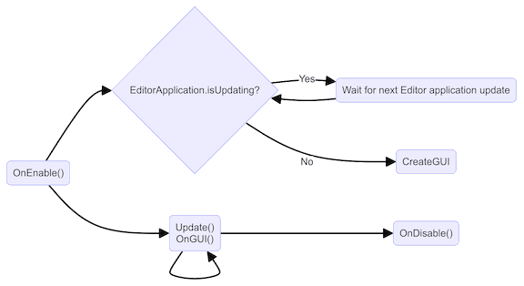
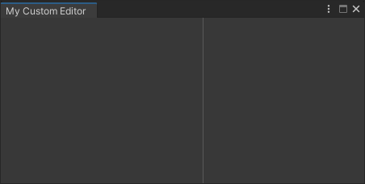
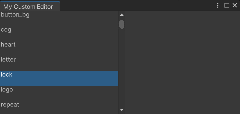

This example demonstrates how to create a custom Editor window with C# script to react to user input, make the UI(User Interface) Allows a user to interact with your application. Unity currently supports three UI systems. More info See in Glossary resizable, and handle hot-reloading.
A custom Editor window is a class that derives from the EditorWindow class. UI Toolkit uses the CreateGUI method to add controls to Editor UI, and Unity calls the CreateGUI method automatically when the window needs to be displayed. This method works the same way as methods such as Awake or Update.
When creating a custom Editor window, follow these guidelines:
Place code dependent on UXML/USS loading in the CreateGUI method to ensure all necessary assets are available.
Keep the event registration code inside CreateGUI or after CreateGUI is called.
The following diagram shows the order of execution of an Editor window:

Editor window execution order
For more information, refer to the EditorWindow class documentation.
Example overview
This example creates a spriteA 2D graphic objects. If you are used to working in 3D, Sprites are essentially just standard textures but there are special techniques for combining and managing sprite textures for efficiency and convenience during development. More info See in Glossary browser, which finds and displays all sprites inside the project, and displays them in a list. If you select a sprite in the list, the image of the sprite displays on the right side of the window.
Custom sprite browser
You can find the completed files that this example creates in this GitHub repository.
Prerequisites
This guide is for developers familiar with the Unity Editor, UI Toolkit, and C# scripting. Before you start, get familiar with the following:
Visual TreeAn object graph, made of lightweight nodes, that holds all the elements in a window or panel. It defines every UI you build with the UI Toolkit. See in Glossary
To add UI controls to the UI, add visual elementsA node of a visual tree that instantiates or derives from the C# VisualElement class. You can style the look, define the behaviour, and display it on screen as part of the UI. More info See in Glossary to the visual tree. UI Toolkit uses the VisualElement.Add() method to add children to an existing visual element, and accesses the visual tree of an Editor window via the rootvisualElement property.
Create a project in Unity with any template.
Right-click in the Project window, and select Create > UI Toolkit > Editor Window.
In the C# box, enter MyCustomEditor.
Clear the UXML and USS checkboxes.
Select Confirm.
From the menu, select Window > UI Toolkit > MyCustomEditor to open the window. The window displays a label with the text “Hello World! From C#”.
Create a list of sprites
To present a list of sprites, the example uses AssetDatabase to find all sprites in a project. For the sprite browser, add a TwoPaneSplitView to split the available window space into two panes: one that is fixed-size and one that is flexibly sized. When you resize the window, the flexible pane resizes while the fixed-size pane remains the same size.
At the top of the file, add the following directive required by the List:
using System.Collections.Generic;
Replace the code inside CreateGUI() with the following code. This enumerates all sprites inside the project.
public void CreateGUI()
{
// Get a list of all sprites in the project
var allObjectGuids = AssetDatabase.FindAssets("t:Sprite");
var allObjects = new List<Sprite>();
foreach (var guid in allObjectGuids)
{
allObjects.Add(AssetDatabase.LoadAssetAtPath<Sprite>(AssetDatabase.GUIDToAssetPath(guid)));
}
}
Inside CreateGUI(), add the following code. This creates a TwoPaneSplitview and adds two child elements as placeholders for different controls.
// Create a two-pane view with the left pane being fixed.
var splitView = new TwoPaneSplitView(0, 250, TwoPaneSplitViewOrientation.Horizontal);
// Add the view to the visual tree by adding it as a child to the root element.
rootVisualElement.Add(splitView);
// A TwoPaneSplitView needs exactly two child elements.
var leftPane = new VisualElement();
splitView.Add(leftPane);
var rightPane = new VisualElement();
splitView.Add(rightPane);
From the menu, select Window > UI Toolkit > MyCustomEditor to open the window. The window displays a split view with two empty panels. Move the divider bar to see it in action.

Window with two split panes
Add a list view
For the sprite browser, the left pane will be a list containing the names of all sprites in the project. The ListView control derives from VisualElement, so it’s easy to modify the code to use a ListView instead of a VisualElement.
The ListView control displays a list of selectable items. It’s optimized to create enough elements to cover the visible area, and pool and recycle the visual elements as you scroll the list. This optimizes performance and reduces the memory footprint, even in lists that have many items.
To take advantage of this, initialize the ListView with the following:
An array of data items
A callback function to create an individual visual list entry in the list
A bind function that initializes a visual list entry with an item from the data array
You can create complex UI structures for each element in the list. For demo purposes, this example uses a simple text label to display the sprite name.
Inside CreateGUI(), change the left pane to a ListView instead of a VisualElement:
public void CreateGUI()
{
...
var leftPane = new ListView();
splitView.Add(leftPane);
...
}
At the bottom of CreateGUI(), add the following code to initialize the ListView:
public void CreateGUI()
{
...
// Initialize the list view with all sprites' names
leftPane.makeItem = () => new Label();
leftPane.bindItem = (item, index) => { (item as Label).text = allObjects[index].name; };
leftPane.itemsSource = allObjects;
}
From the menu, select Window > UI Toolkit > MyCustomEditor to open the custom Editor window. The window displays a scrollable list view and selectable items similar to the image below.

ListView with sprite names
Add callbacks
To display the image of a sprite on the right panel when you select it from the list, use the selectionChanged property of the left pane and add a callback function.
To display the image, create a new Image control for the selected sprite, and use VisualElement.Clear() to remove all the previous content before adding the control.
Tip: If you lose your window and the menu doesn’t reopen, close all floating panels through the menu under Window > Panels > Close all floating panels, or reset your window layout.
Add a callback function when the selection changes from the list in the left pane.
public void CreateGUI()
{
...
// React to the user's selection
leftPane.selectionChanged += OnSpriteSelectionChange;
}
private void OnSpriteSelectionChange(IEnumerable<object> selectedItems)
{
}
The callback function needs to access the right pane of the TwoPaneSplitview. To do so, change the right pane created inside CreateGUI() into a member variable:
private VisualElement m_RightPane;
public void CreateGUI()
{
...
m_RightPane = new VisualElement();
splitView.Add(m_RightPane);
...
}
Add the following code to the OnSpriteSelectionChange function. This clears all previous content from the pane, gets the selected sprite, and adds a new Image control to display the sprite.
private void OnSpriteSelectionChange(IEnumerable<object> selectedItems)
{
// Clear all previous content from the pane.
m_RightPane.Clear();
// Get the selected sprite and display it.
var enumerator = selectedItems.GetEnumerator();
if (enumerator.MoveNext())
{
var selectedSprite = enumerator.Current as Sprite;
if (selectedSprite != null)
{
// Add a new Image control and display the sprite.
var spriteImage = new Image();
spriteImage.scaleMode = ScaleMode.ScaleToFit;
spriteImage.sprite = selectedSprite;
// Add the Image control to the right-hand pane.
m_RightPane.Add(spriteImage);
}
}
}
From the menu, select Window > UI Toolkit > MyCustomEditor to open the custom Editor window. When you select a sprite from the list on the left side, the image of the sprite displays on the right side of the window similar to the image below.
Sprite browser in action
Make the UI resizable
Editor windows are resizable within their minimum and maximum allowed dimensions. To set these dimensions, write to the EditorWindow.minSize and EditorWindow.maxSize properties. To prevent a window from resizing, assign the same dimension to both properties.
If the window dimensions are too small to display the entire UI, you can use a ScrollView element to provide scrolling for the window. The ListView on the left pane uses a ScrollView internally, but the right pane is a regular VisualElement. To make the right pane resizable, change it to a ScrollView with bidirectional scrolling.
Add the following code at the bottom of the ShowMyEditor() function to limit the size of the window:
public static void ShowMyEditor()
{
...
// Limit size of the window.
wnd.minSize = new Vector2(450, 200);
wnd.maxSize = new Vector2(1920, 720);
}
Inside CreateGUI(), change the right pane VisualElement to a ScrollView with bidirectional scrolling:
public void CreateGUI()
{
...
m_RightPane = new ScrollView(ScrollViewMode.VerticalAndHorizontal);
splitView.Add(m_RightPane);
...
}
From the menu, select Window > UI Toolkit > MyCustomEditor to open the custom Editor window. The sprite browser window now has scrollbars. Resize the window to see the scrollbars in action.
Editor window with scrollbars
Support hot-reloading in the Editor window
A C# domain reload occurs when scriptsA piece of code that allows you to create your own Components, trigger game events, modify Component properties over time and respond to user input in any way you like. More info See in Glossary recompile or when the Editor enters Play mode. In the Editor window you just created, open the sprite browser, select a sprite, and then enter Play mode. The window resets and the selection disappears.
A proper Editor window needs to work with the hot-reloading workflow. Since VisualElement objects aren’t serializable, you must recreate the UI every time a reload happens. This means that the CreateGUI() method is invoked after the reload has completed. This lets you restore the UI state before the reload by storing the necessary data in your EditorWindow class.
Add a member variable to the MyCustomEditor class to save the selected index in the sprite list. When you make a selection, this member variable stores the new selection index of the ListView.
public class MyCustomEditor : EditorWindow
{
[SerializeField] private int m_SelectedIndex = -1;
....
}
Add the following code at the bottom of CreateGUI() to store and restore the selected list index.
public void CreateGUI()
{
...
// Restore the selection index from before the hot reload.
leftPane.selectedIndex = m_SelectedIndex;
// Store the selection index when the selection changes.
leftPane.selectionChanged += (items) => { m_SelectedIndex = leftPane.selectedIndex; };
}
From the menu, select Window > UI Toolkit > MyCustomEditor to open the custom Editor window. Select a sprite from the list and enter Play mode to test hot-reloading.
As a reference, here is the finished script:
using System.Collections.Generic;
using UnityEditor;
using UnityEngine;
using UnityEngine.UIElements;
public class MyCustomEditor : EditorWindow
{
[SerializeField] private int m_SelectedIndex = -1;
private VisualElement m_RightPane;
[MenuItem("Window/UI Toolkit/MyCustomEditor")]
public static void ShowMyEditor()
{
// This method is called when the user selects the menu item in the Editor.
EditorWindow wnd = GetWindow<MyCustomEditor>();
wnd.titleContent = new GUIContent("My Custom Editor");
// Limit size of the window.
wnd.minSize = new Vector2(450, 200);
wnd.maxSize = new Vector2(1920, 720);
}
public void CreateGUI()
{
// Get a list of all sprites in the project.
var allObjectGuids = AssetDatabase.FindAssets("t:Sprite");
var allObjects = new List<Sprite>();
foreach (var guid in allObjectGuids)
{
allObjects.Add(AssetDatabase.LoadAssetAtPath<Sprite>(AssetDatabase.GUIDToAssetPath(guid)));
}
// Create a two-pane view with the left pane being fixed.
var splitView = new TwoPaneSplitView(0, 250, TwoPaneSplitViewOrientation.Horizontal);
// Add the panel to the visual tree by adding it as a child to the root element.
rootVisualElement.Add(splitView);
// A TwoPaneSplitView always needs two child elements.
var leftPane = new ListView();
splitView.Add(leftPane);
m_RightPane = new ScrollView(ScrollViewMode.VerticalAndHorizontal);
splitView.Add(m_RightPane);
// Initialize the list view with all sprites' names.
leftPane.makeItem = () => new Label();
leftPane.bindItem = (item, index) => { (item as Label).text = allObjects[index].name; };
leftPane.itemsSource = allObjects;
// React to the user's selection.
leftPane.selectionChanged += OnSpriteSelectionChange;
// Restore the selection index from before the hot reload.
leftPane.selectedIndex = m_SelectedIndex;
// Store the selection index when the selection changes.
leftPane.selectionChanged += (items) => { m_SelectedIndex = leftPane.selectedIndex; };
}
private void OnSpriteSelectionChange(IEnumerable<object> selectedItems)
{
// Clear all previous content from the pane.
m_RightPane.Clear();
var enumerator = selectedItems.GetEnumerator();
if (enumerator.MoveNext())
{
var selectedSprite = enumerator.Current as Sprite;
if (selectedSprite != null)
{
// Add a new Image control and display the sprite.
var spriteImage = new Image();
spriteImage.scaleMode = ScaleMode.ScaleToFit;
spriteImage.sprite = selectedSprite;
// Add the Image control to the right-hand pane.
m_RightPane.Add(spriteImage);
}
}
}
}